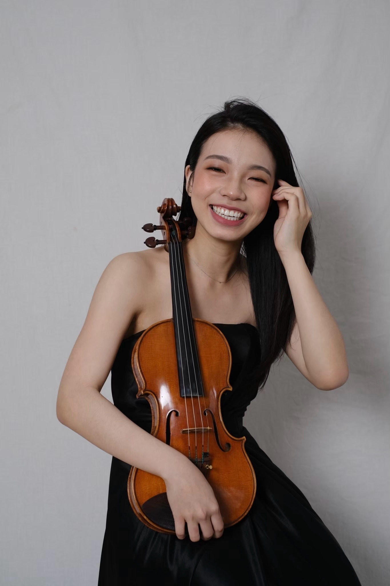

Hi, I'm Constance! I was born and raised in Taiwan, where I began learning the violin and piano at the age of eight. Like many children, I started playing the violin as a hobby. One evening, I was frustrated while doing my math homework. Feeling stressed and exhausted, I went to the practice room and picked up my violin instead. I began playing simply to clear my mind. Within moments, I felt a sense of joy and peace that I hadn't been able to find anywhere else. From then on, whenever I felt overwhelmed or couldn't find the right words, I found myself returning to the violin. It became a way to express emotions that words could not, and it has been my lifelong companion ever since.
My musical journey began with my teachers in Taiwan—Chien-Fu Hung, Yu-Wen Chen, Cheng-Tu Su, and Chih-Chang Hsueh—who laid the foundation for my growth as a musician. After completing my bachelor's degree, I moved to the United States to pursue Master of Music in Violin Performance at the Indiana University Jacobs School of Music, where I studied with Kevork Mardirossian. During my time at Indiana, I enrolled in an Unaccompanied Bach Interpretation class taught by baroque violinist Ingrid Matthews. That class opened the door of historical performance for me.
I still remembered Ingrid began the class by performing the Adagio from Bach's g minor sonata on her baroque violin. From the very first note, I was completely captivated. The music and the sound felt so warm, earthy, pure, and alive in a way I could never imagine. In that moment, I found myself wondering: Could I ever make that sound? That moment planted a seed of curiosity that began to grow.
Soon I began studying baroque violin with Ingrid and participating in IU Baroque Orchestra. The curiosity gradually grew into a passion and eventually led me to pursue my second Master of Music degree in Historical Performance at The Juilliard School. During this time, I was honored to be one of the winners in the 2024 Indiana University Baroque Concerto Competition.
At Juilliard, I studied baroque violin under the guidance of Cynthia Roberts and Elizabeth Blumenstock. I was fortunate to learn from some leading figures in early music, including Rachel Podger, Robert Mealy, Shunske Sato, Leila Schayegh, William Christie, Masaki Suzuki, Laurence Cummings, Lionel Meunier, and Jakob Lehmann. I also had the privilege of performing in renowned venues such as Carnegie Hall and Alice Tully Hall, as well as traveling to Bruges for Musica Antiqua Festivals and Italy for concerts. These experiences greatly nurtured my musicianship and blossomed my life.
Alongside performing, I'm passionate about teaching, and have worked with students of all ages. My teaching philosophy centers on building a strong foundation while encouraging curiosity, creativity, and confidence. I strive to create a warm and embracing learning environment where students feel supportive and joyful. More than anything, I hope music becomes their friend, just as it has been for me.
When I'm not practicing or performing, you'll probably find me baking desserts, crocheting, editing life videos, discovering cozy cafés with friends, or trying to make friends with every cat I meet :)